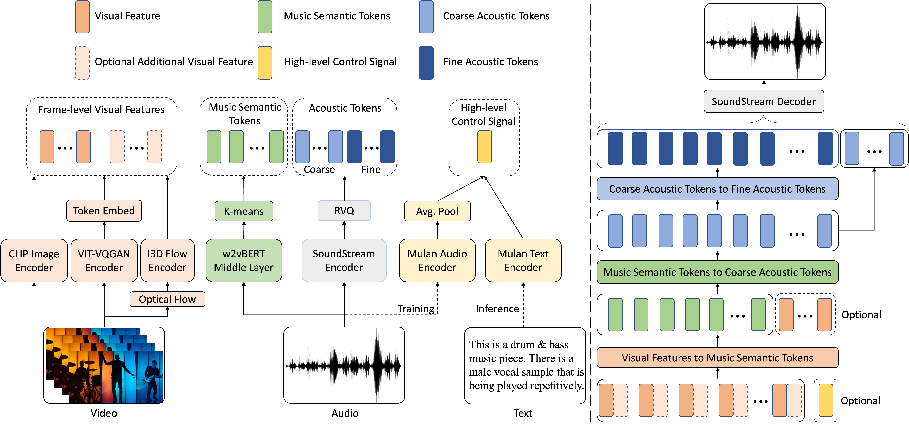

Controllable Video to Music Generation via Multi-stage Sequential Modeling
We propose a novel approach called V2Meow that is able to generate high-quality music audio that aligns well with the visual semantic of the input video and is controllable by text prompt. Specifically, the proposed music generation system is a multi-stage autoregressive model which is trained with a number of O(100K) music audio clips paired with video frames, which are mined from in-the-wild music videos, and no parallel symbolic music data is involved. V2Meow is able to synthesize high-fidelity music audio waveform solely conditioned on an arbitrary silent video clip, and it also allows high-level control over the music style of generation examples via supporting text prompts in addition to the video frames conditioning. Through both qualitative and quantitative evaluations, we demonstrate that our model outperforms several existing music generation systems in terms of both visual-audio correspondence and audio quality.

Zero-shot Evaluation on AIST++ Video Inputs
Music samples generated by V2Meow on AIST++ Dance Videos. No dance motion data is used as inputs, and only visual features (CLIP + I3D FLOW embedding) at 1fps are used to generate 10s music audio.
V2Meow Generates Visually Relevant Music to Non-Dance Video Inputs
Music samples generated by V2Meow on Cat Videos. Visual features (CLIP + I3D FLOW embedding) at 1fps are used to generate 10s music audio. Compared to dance videos, cat videos do not have easily identifiable visual cues like dance motions that directly correlate with music rhythm. As cat videos are not included in the training data, thus it is considered as zero-shot evaluation.
Broader Impact
Controllable generative models such as V2Meow can serve as the foundation for new tools, technologies, and practices for content creators. While our motivation is to support creators to enrich their creative pursuits, we acknowledge that these models need to be developed and deployed in a manner that takes into account the values and wellbeing of creators, their communities, and society.
In particular, large generative models learn to imitate patterns and biases inherent in the training sets, and in our case, the model can propagate the potential biases built in the video and music corpora used to train our models. Such biases can be hard to detect as they manifest in often subtle, unpredictable ways, which are not fully captured by our current evaluation benchmarks. Demeaning or other harmful language may be generated in model outputs, due to learned associations or by chance. A thorough analysis of our training dataset shows that the genre distribution is skewed towards a few genres, and within each genre, gender, age or ethical groups are not represented equally. For example, male is dominant in hip-hop and heavy metal genre. These concerns extend to learned visual-audio associations, which may lead to stereotypical associations between video content (i.e. people, body movements/dance styles, locations, objects) and a narrow set of musical genres; or to demeaning associations between choreography in video content and audio output (i.e. minstrelsy, parody, miming). ML fairness testing is required to understand the likelihood of these patterns in any given model and effectively intervene in them. We expand on these concerns in our data and model card.
As such, in tandem with our algorithmic advances, we are actively working both internally and externally on initiatives to support the understanding and mitigation of possible risks of bias inherited from the training data, cultural appropriation and stereotyping, and erasure of cultural and political context of music. Further work is required to make determinations about whether the audio generated is contextually appropriate, which extends beyond technical measurements, or tempo or rhythmic alignment. This requires understanding of social and musical context, and is best done in collaboration with cultural and musical experts. We stress that these issues and others are as important and valuable as algorithmic advances that sometimes overshadow the broader context in which models exist.
Authors
Kun Su2*,
Judith Yue Li1*,
Qingqing Huang1,†,
Dima Kuzmin1,†,
Joonseok Lee1,†,
Chris Donahue1,
Fei Sha1,
Aren Jansen1,
Yu Wang2,
Mauro Verzetti1,
Timo Denk1,
*Lead author †Core contributor †Google Research 2Work done while at Google. Correspondence to: Judith Li(judithyueli@google.com).
Acknowledgements
We are grateful for having the support from Jesse Engel, Ian Simon, Hexiang Hu, Christian Frank, Neil Zeghidour, Andrea Agostinelli, David Ross and authors of MusicLM project for sharing their research insights, tutorials and demos. Many thanks to Austin Tarango, Leo Lipsztein, Fernando Diaz, Renee Shelby, Rida Qadri and Cherish Molezion for reviewing the paper and supplementary materials and share valuable feedbacks regarding responsible AI practice. Thanks Sarvjeet Singh, John Anderson, Hugo Larochelle, Blake Cunningham, Jessica Colnago for supporting publication process. We owe thanks to Muqthar Mohammad, Rama Krishna Devulapalli, Sally Goldman, Yuri Vasilevski, Alena Butryna for supporting our human study. Special thanks to Joe Ng, Zheng Xu, Yu-Siang Wang, Ravi Ganti, Arun Chaganty, Megan Leszczynski, Li Yang for exchanging research ideas and sharing engineering best practice. Thanks Li Li, Jun Wang, Jeff Wang, Bruno Costa, Mukul Gupta for sharing early feedbacks to our demo.